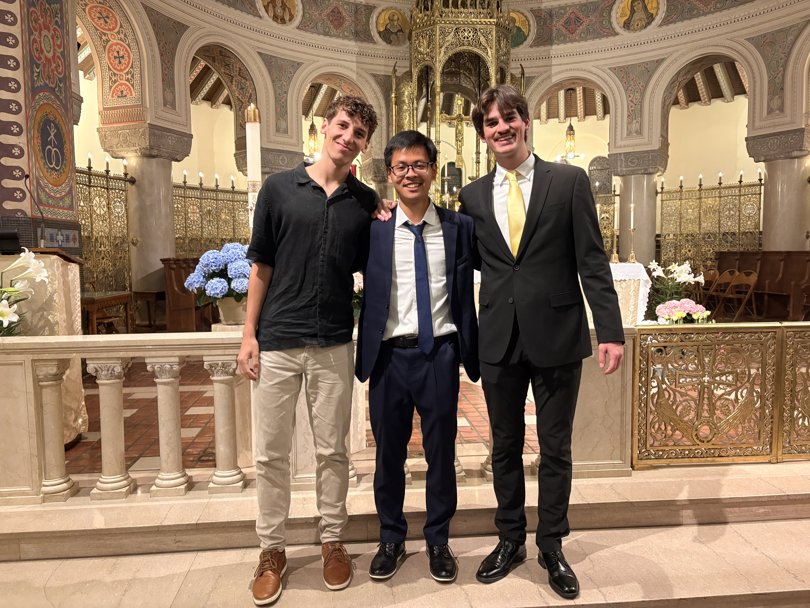
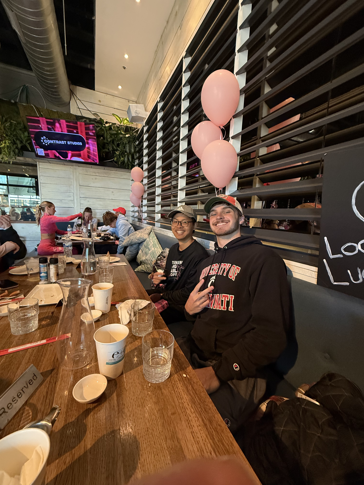
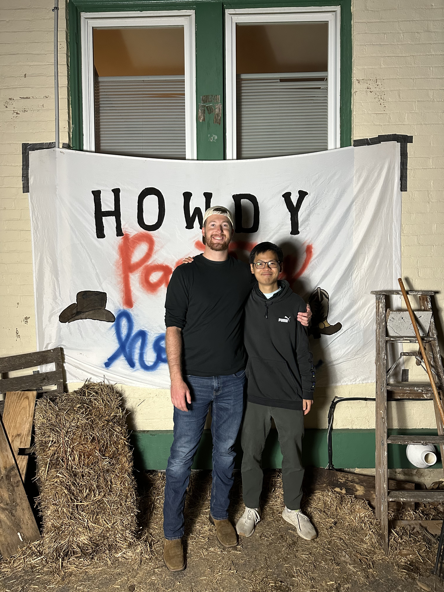
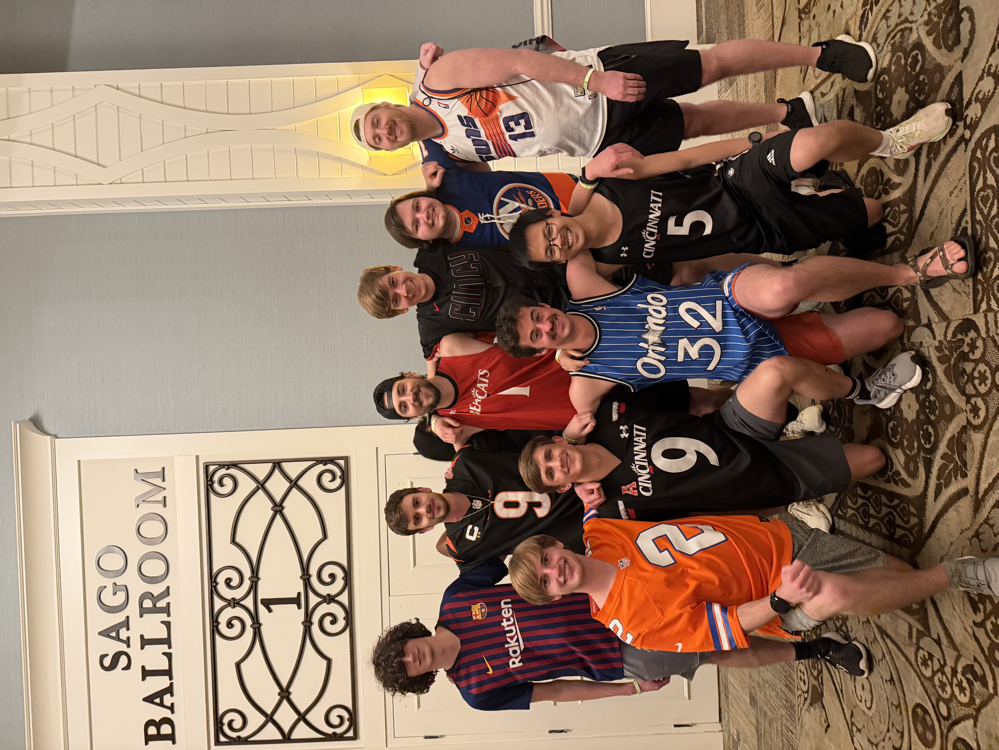

2025-2026
I started going to church last year and it has changed my life completely. I never thought such spiritual life could be rather helpful to my well being but I was a complete fool – compared to myself a year ago, I would say I’m so different for the better. So, how’s different? Let me walk you through the memory lane from the start – Phuc of 2024. 2024’s Phuc was a weird and super introvert guy. A guy that always stayed in the corner of every party that he had ever been to; a guy that always wanted attention but never said a word to other people but then felt frustrated because no one recognized him; a guy that was full of jealousy, anger, self-doubt, and also the one that had the biggest ego ever, who thought of himself being the best and then felt totally defeated when someone better than him came by. That was me of 2024, 2023, 2022, and all the way back – full of darkness. I struggled indeed, but never thought I’m savable. But then, something changed, a light came into my life and it slowly changed me. It was Jesus.
I met a guy, Aidan, in December of 2024 at this random conference that my research advisor wanted me to go to (it was my first Coop at the time). Coming in, I thought the room would be full of middle aged people (i.e. experts that I would find a hard time connect to), but to my surprise, there was Aidan, who is at the same age as me, and Oh boy… he’s a yapper. He approached me and wanted to talk to me and I just tried to go along. I remember I felt really uncomfortable and just wished we would never see each other again. However, the world doesn’t work that way; I later bumped into him again in one of the classes I had the next Spring. I decided that I would give it a try because it was really hard that semester having my roommates away on their Coop. We started hanging out and our relationship started slowly growing. It’s nothing so special at first, but one day everything changed. I remember vividly one random Wednesday, he invited me to Young Life’s trivia, and that was the first time I heard of God’s words. To be honest, I hated it at first, but the fear of missing out kicked in and I just pretended to like it so that I could continue hanging out with Aidan and the guys I met at trivia. God works in miraculous way – my heart slowly changed. I started going to church and bible study. Fast forward to Easter of 2026, I got Baptized and Confirmed into the Catholic Church and it was awesome. Along the way, I picked up running, actually ran my first 5k, 10k, and half marathon, and I’m training for the half ironman next year.
God is really good and the experience I had last year really transformed me. I’ve moved from a guy who never talk to a guy who wants to talk to people and chat about all sort of things. I’ve gone from a guy who’s always insecure about everything into a guy who’s confident about everything that he’s doing and knowing for sure that everything is going to be alright. I’ve gone from a guy who’s really anxious about his body and his appearance to a guy who’s athletic. I remember last year when I went to a conference, I couldn’t crack my mouth open to talk to anyone, but during this year conference, I talked and made connection with everyone. My friendships have also been much better, more intimate.
I feel like this will definitely help me a lot in my future, both professionally and personally. I’m deeply grateful for this.



